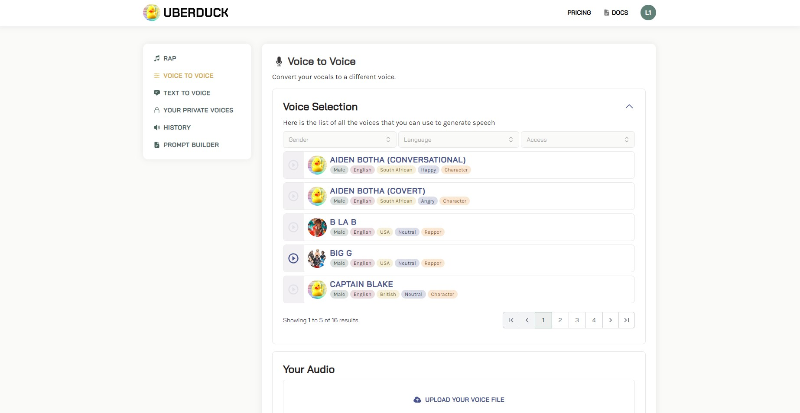
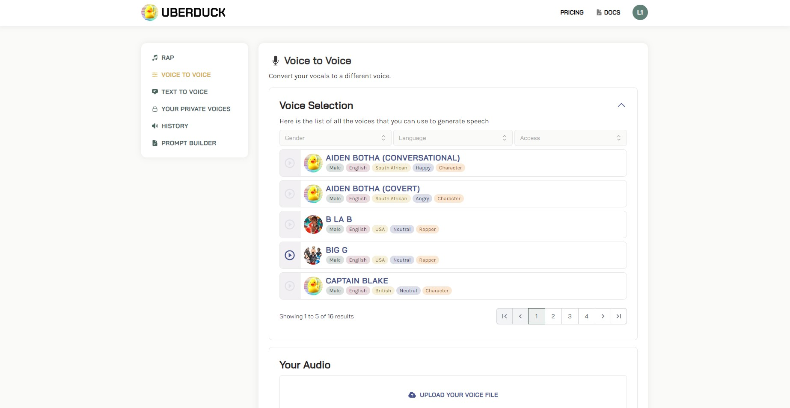

Uberduck
Uberduck - это нейросеть, с помощью которой вы сможете создавать голосовые озвучки с более чем 5000 выразительными голосами.
Нейросети для работы с аудио
Uberduck - это нейросеть, с помощью которой вы сможете создавать голосовые озвучки с более чем 5000 выразительными голосами.
